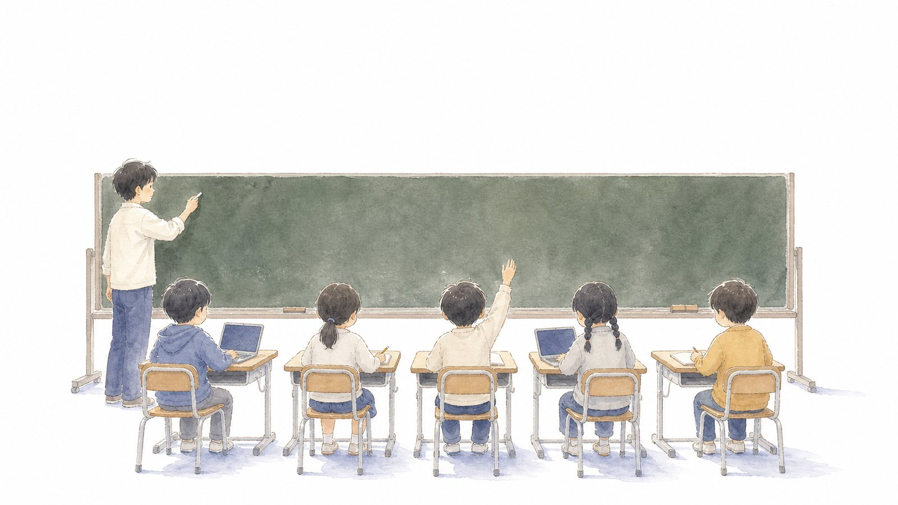
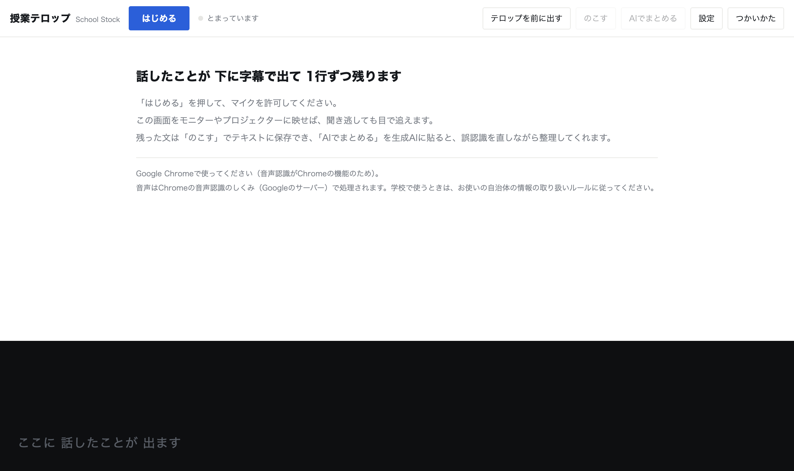
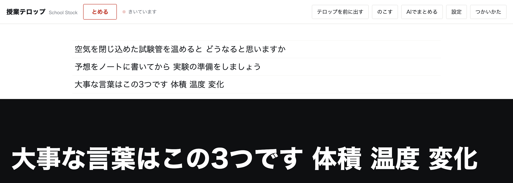
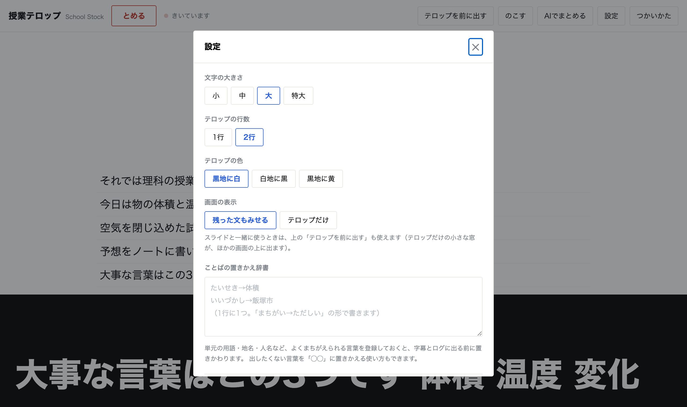
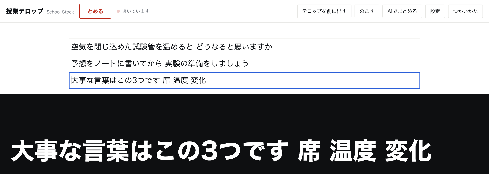
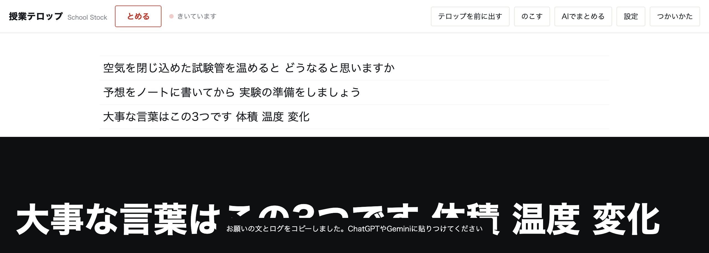

気になる子の支援
授業テロップの使い方
── 話したことを、画面の下に残す
2026年8月30日 ／ 実践アイデア

板書は残ります。でも、口で言ったことは消えていきます。
聞きのがした子は、どこへ戻ればいいのか分かりません。
話したことを画面の下に字幕で出して、1行ずつ残していく道具を作りました。
ブラウザで開くだけで、登録もインストールもいりません。
３行でいうと
- Chromeで開いて「はじめる」を押すと、話したことが画面の下に字幕で出ます
- 字幕は1行ずつ上に残るので、聞きのがしても子どもが自分で追いつけます
- 残った文はテキストで保存でき、生成AIに渡して要点や連絡を整理できます
授業テロップを開く → 無料・登録不要・Google Chrome で動きます。
どんな子のための道具か
まっすぐに言うと、耳から入る言葉が残りにくい子のためのものです。
聞こえていないわけではないのに、話が流れていってしまう。
大事な言葉だと分かっても、書き留める前に次の話が始まっている。
「もう一度言ってください」と言える子ばかりでもありません。
聴覚に障害のある子への情報保障としても使えます。
手話通訳やノートテイクを毎時間つけるのは、現実には難しい。その間を少しだけ埋めるためのものです。
先生の側が楽をするための道具ではありません。
先生はこれまでどおり話し、板書もします。その上で、それでも追いつけない子のために、もう一つ道を足すという位置づけです。
はじめかた
- Google Chrome で開きます。音声認識にChromeのしくみを使うので、ほかのブラウザでは動きません
- 「はじめる」を押して、マイクを許可します。最初の1回だけ、ブラウザが確認してきます
- この画面をモニターや電子黒板に映します。画面を複製して映せば、そのまま教室のテロップになります

開いた直後の画面です。上のボタンは6つだけ。下の黒い帯に字幕が出ます。

話しはじめると、下の帯に今の言葉が出ます。文が決まると、上に1行ずつたまっていきます。
少し上を見れば、さっきの話がそのまま読めます。
画面が暗くならないようにしてあります。
話しているあいだ、パソコンのスリープを止めています。授業の途中で画面が消える心配はありません。
見た目を教室に合わせる
うしろの席から読めるかどうかは、教室の広さとモニターの大きさで変わります。
文字の大きさは4段階、色は3つから選べるので、実際に教室で見て決めてください。

設定はこれだけです。「黒地に黄」は、教室が明るくて白が飛ぶときに読みやすくなります。
- 文字の大きさ。小・中・大・特大の4段階。まず「大」で試して、うしろの席から見てもらうのが早いです
- テロップの行数。1行だと今の一言だけ、2行だと少し前まで見えます
- テロップの色。黒地に白／白地に黒／黒地に黄
- 画面の表示。「テロップだけ」にすると、残った文を隠して字幕だけを映せます
スライドと一緒に使うとき
「テロップを前に出す」を押すと、テロップだけの小さな窓が出て、スライドなどほかの画面の上に重なります。
窓のふちをつかんで大きさを変えると、字の大きさも一緒に変わります。窓を閉じれば元の画面に戻ります。
まちがって聞き取られたら
音声認識は完璧ではありません。とくに単元の用語・地名・人名は外れやすく、
そこを外すと意味が変わってしまいます。直し方は2つあります。
1. その場でクリックして直す
残った文はクリックすると、その場で書き直せます。Enterで確定、空にすればその行が消えます。

「体積」が「席」になってしまった行を、クリックして直しているところ。
青い枠が出たら、そのまま打ち直せます。
2. あらかじめ辞書に登録しておく
設定の「ことばの置きかえ辞書」に たいせき→体積 のように1行ずつ書いておくと、
字幕とログに出る前に置きかわります。授業の前に、その時間の用語を2〜3語だけ入れておくのが現実的です。
この道具は、文を勝手に書き直しません。
話し言葉を機械が整った文に直そうとすると、直る数より新しく生まれる誤りのほうが多くなることがあります
（人工知能学会論文誌 37巻3号ほか）。だから、直すのは人の役目にしています。
残した文をどう使うか
授業が終わったら「のこす」で、時刻つきのテキストとして保存できます。
そのまま読み返してもいいのですが、生成AIに渡すと整理してくれます。

「AIでまとめる」を押すと、ログとお願いの文が一緒にコピーされます。
あとは ChatGPT や Gemini に貼りつけるだけです。
返ってくるのは、だいたいこの3つです。
- その時間の要点。誤認識を文脈から直したうえでまとめてくれます
- 大事な言葉と、その短い説明。板書し忘れた用語の拾い直しに使えます
- 連絡の一覧。持ち物・宿題・提出物など、口で言ったきりのものが並びます
休んだ子への連絡や、自分のふりかえりに使えます。
字幕が読みやすくなる話し方
認識のよしあしは、道具よりも話し方で変わります。
大学の授業で音声認識を使った実践報告では、話し方を意識するだけで認識率が4割から8割まで上がったという記録があります
（皆川ら 2016・コンピュータ&エデュケーション）。次の5つだけ気をつけてみてください。
- ゆっくりめに話す。1分間に300字くらいが目安です
- 一文を短くして、言い切ったら1秒あける。この「間」が、文の切れ目になります
- マイクは口の近くに。ピンマイクがあると安定します
- 単元の用語・地名・人名は、辞書に登録しておく。いちばん効きます
- 子どもの発言は、先生が復唱してテロップに乗せる。復唱は授業でも自然な動きです
向いているのは、先生がひとりで話す説明や指示の場面です。
グループ活動のようにまわりがにぎやかなときは、認識が大きく崩れます。そこは無理に使わないほうがいいと思います。
使う前に知っておいてほしいこと
- 音声はChromeのしくみで処理されます。認識のとき、音声はGoogleのしくみを通ります。
学校でお使いになる場合は、お使いの自治体・学校の情報の取り扱いのきまりに合わせてご判断ください
- 残った文は、そのパソコンの中にだけ保存されます。どこかに送られることはありません
- 人の名前が字幕やログに残ることがあります。映す場面・残す場面に合わせて気をつけてお使いください
- 認識は完璧ではありません。大事な連絡は、口頭や板書と合わせてお使いください
まとめ
- Chromeで開いて「はじめる」だけ。画面をモニターに映せば、そのまま教室で使えます
- まちがいはクリックで直せます。用語は先に辞書へ入れておくと、そもそも外れにくくなります
- 残った文はAIに渡して、要点・用語・連絡に整理できます
授業テロップを開く →